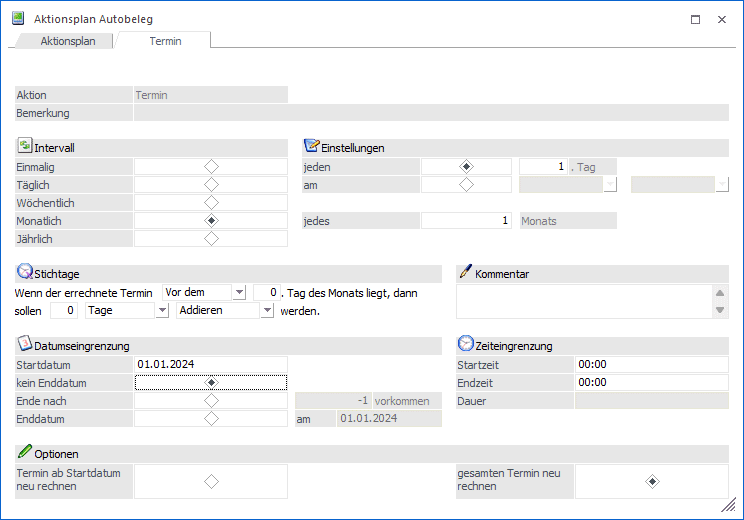
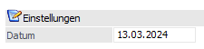
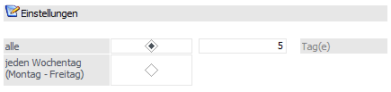
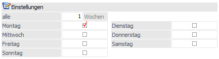
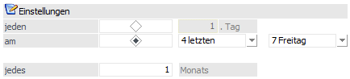
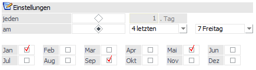

Damit ein Kunde in die Telefonliste aufgenommen wird, muss für ihn ein Autobeleg und damit ein Eintrag im Kalender erzeugt werden.
Zunächst wird im Menüpunkt
1 Erfassen
1 Autobeleg
1 Aktionsplan
ein neuer Termin festgelegt. Stellen Sie sich dafür in die nächste freie Zeile und wählen Sie als Aktion "Termin" aus. In der Spalte Bemerkung kann eine Notiz oder auch eine Bezeichnung für diesen Termin eingetragen werden.
Wechseln Sie anschließend in das zweite Register "Termin". In diesem Fenster erfolgt die eigentliche Definition des Termins.

Ø Intervall
Im Bereich "Intervall" wird eingestellt, in welchen Perioden der Kunde auf der Telefonliste vorgeschlagen werden soll.
Abhängig von der Eingabe im Bereich "Typ" ändern sich die Eingabefelder im Bereich "Einstellungen".
Ø Einmalig

Der Kunde soll nur einmalig zu einem bestimmten Termin telefonisch kontaktiert werden. Im Bereich "Einstellungen" kann im Feld Datum der Zeitpunkt des Anrufs eingegeben werden.
Ø Täglich

Der Kunde soll entweder an jedem Wochentag telefonisch erreicht werden, oder es wird im Feld "alle …. Tag(e)" der Rhythmus des Anrufs erfasst. "alle 5 Tag(e)" bedeutet, dass der Kunde an jedem 5. Tag kontaktiert werden soll.
Ø Wöchentlich

Bei der Einstellung "Wöchentlich" kann gewählt werden, an welchem Wochentag der Kunde kontaktiert werden soll. Eine Mehrfachauswahl ist möglich, es kann also bei der Einstellung "wöchentlich" auch zu mehreren Terminen pro Woche kommen. Des Weiteren kann im Feld "alle …. Wochen" eingestellt werden, dass der Kunde nur nach Ablauf einer bestimmten Wochenanzahl telefonisch erreicht werden soll.
Ø Monatlich

Nach der Einstellung "monatlich" kann im Feld "jeden …Tag" gewählt werden, am wievielten jeden Monats der Kunde kontaktiert werden soll.
Des Weiteren kann eingestellt werden am wievielten Wochentag eines Monats der Kunde telefonisch erreicht werden soll. Es kann des Weiteren vereinbart werden, dass er erst nach Ablauf einiger Monate "jedes …. Monats" kontaktiert wird.
Ø Jährlich

Nach der Wahl des Typs "jährlich" kann gewählt werden, an welchem Tag jedes wievielten Monats der Kunde kontaktiert werden soll.
Ø Stichtage
Mit der Option "Stichtage" kann das Datum der Kontaktaufnahme noch verschoben werden. Es kann definiert werden ob zu, nach oder vor einem bestimmten Tag des Monats ein definierter Zeitraum addiert oder subtrahiert werden soll.
Ø Kommentar
Es kann ein Kommentar zu dem Termineintrag erfasst werden.
Ø Startdatum
Eingabe des Datums, ab dem der Kunde in die Telefonliste aufgenommen werden soll.
Ø Termin ab Startdatum neu rechnen
Diese Option bewirkt bei Änderungen der Termindefinition, dass ab dem ev. neuen Startdatum die Termine zur Kontaktaufnahme neu berechnet werden.
Ø Gesamten Termin neu rechnen
Diese Option bewirkt bei Änderungen der Termindefinition, dass ab dem ursprünglichen Startdatum, ev. auch rückwirkend, die Termine für die Kontaktaufnahme neu errechnet werden sollen.
Ø Kein Enddatum
Diese Option bewirkt, dass der Kunde immer wieder zur Kontaktaufnahme vorgeschlagen wird. Zur Beendigung ist es notwendig, dass die Zeile aus dem Aktionsplan gelöscht wird.
Ø Ende nach … Vorkommen
Eingabe der Anzahl von Anrufen nach denen keine weitere Kontaktaufnahme erwünscht ist.
Ø Enddatum
Eingabe des Datums, nach dem keine weitere Kontaktaufnahme erwünscht ist.
Ø Startzeit - Endzeit
Bei Startzeit kann eine genaue Uhrzeit für diesen Termin eingetragen werden. Möchte man einen bestimmten Bereich definieren (von - bis) dann kann auch eine Endzeit eingetragen werden.
Nach der Definition des Termins, wechseln Sie nochmals in das Register "Aktionsplan" und speichern Sie Ihre Eingaben mit dem OK-Button ab.
Wenn Sie nun den Kalender im Menüpunkt
1 Datei
1 Kalender
aufrufen, so sehen Sie für jeden Termin einen Eintrag am entsprechenden Tag.